How Magna Urbis
is built.
The complete journey, from elevation fields to streets, and from parcels to roofs. What the code computes, why it computes it, which sources inform it — and what its results do not establish.
Pre-industrial cartography prototype / English documentation / repository inspected on 28 October 2026
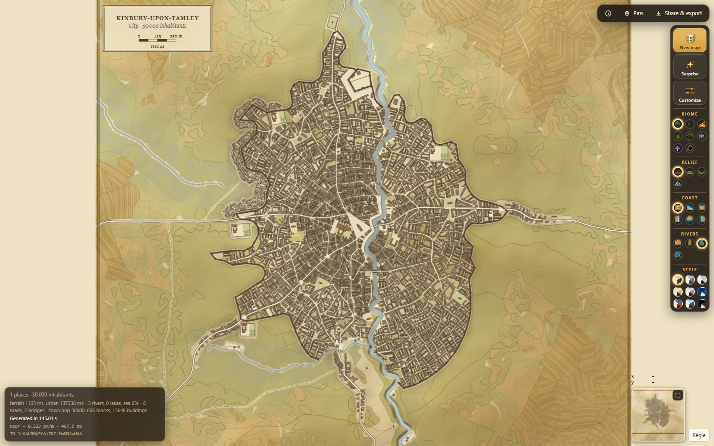
european-organic, Parchment style. This image illustrates V1; it is not a measurement of the Rust engine. The complete recipe is in the figure manifest.A traceable explanation, not a certification.
Magna Urbis creates landscapes and settlements for maps and tabletop role-playing games. It combines established algorithms, numerical adaptations and artistic heuristics. A plausible-looking river is not a hydrological forecast; a medina plan is not an archaeological reconstruction; a requested population is not a population actually housed.
This page connects the stages. Method notes and source code remain the detailed references. “Code” links point to the online repository; the paths and SHA-256 fingerprints recorded in the inspected checkout are retained in evidence.json. Online branches may change after this inspection. Screenshots are unretouched project files; their age and evidential scope are stated.
| Label | Meaning in this atlas |
|---|---|
| Implemented | A function or execution path exists in the repository. This does not guarantee every configuration or exhaustive visual validation. |
| Project-specific method | A local design choice, parameter set or original combination. The algorithm and its assumptions are explained; no paper is cited as artificial authority. |
| Comparison | A publication that helps place the method in context, without claiming a complete reimplementation. |
V1, V2 and the workshops
The TypeScript pipeline web/src/gen/pipeline.ts retains its world generation, cultures and rendering. The Rust pipeline separates retained terrain, settlement placement, roads and urban stages. Workshop interfaces and TypeScript bridges orchestrate these computations. The Rust house engine has its own catalogue and solver; urban placement now calls it. This connection is real, but individual houses may be refused, and large ensembles still require validation.
In some files, “V2” also names a rendering style. A V2 visual option alone therefore does not establish that generation uses the complete new workflow. Evidence must identify the engine, backend and applied state.
The V2 Studio workflow
V2 Studio has two screens: Topography, followed by Settlements. The second screen separates placement and roads from individual or collective construction. The workflow can also run in one click. Retained terrain and hydrology are preserved while places are built or modified.
In the browser replay illustrated below, computation explicitly uses TypeScript on CPU. These historical captures document the classic workflow. The current version starts with Rust: structured forms forward terrain, neural model, erosion, climate and hydrology settings to the selected engine. Native terrain, physical fields and the water network are retained together; they are no longer replaced with fresh TypeScript drainage. Rust settlement placement and roads reuse this territory, followed by staged urban generation. The classic engine remains separately selectable. Width and the eight sea directions can be configured before the first calculation, with Rust widths from 500 m to 100 km. Always record the backend actually applied at each stage.
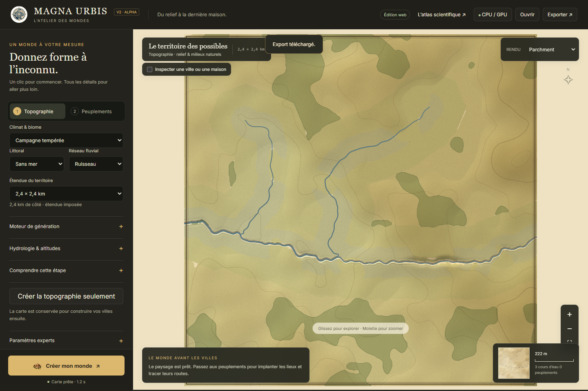
v2-ui-evidence, 2.4 km, flat relief, stream, no sea. Three watercourses; no places built.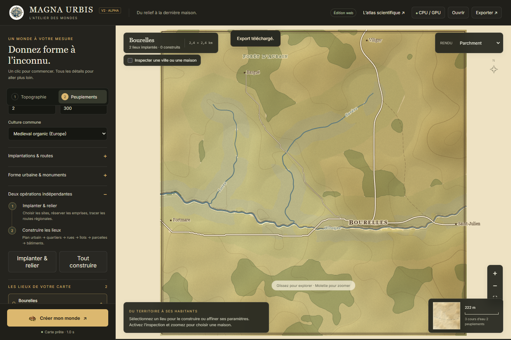
V2 workflow: stage orchestration · backends actually executed · browser replay from 28 October. These screenshots were produced by that replay without retouching.
For everyday use, commands and import/export scopes, also see the V2 Studio guide. The atlas explains methods and evidence; the guide describes interface operations.
The V2 Rust urban integration provides four explicit stages: layout, parcels, programme and buildings, with retained native snapshots. Separate Rust/WASM and native Rust replays exercised all four stages through accepted houses. The TypeScript screenshots above remain attributed to their own workflow; they are not images of those Rust tests.
Settings may be global or specific to a place, then target a quarter, parcel or identified house request. Reports expose warnings and refusals; refused requests can be retried with corrected configurations. Overrides remain subject to recipes and physical constraints. A local request counter allows checking that a house edit does not implicitly rerun terrain generation or the entire cadastre.
Read: V1 pipeline · native urban placement · V2 rendering style.
A chain of retained states.
The logical sequence is terrain → water → settlements → roads → town → programme and parcels → buildings → presentation. Feedback and local iterations also occur: the programme reserves land before subdivision; the built balance is reconciled after actual placements. Downstream stages consume applied data, including geometries, holes, identities and refusals.
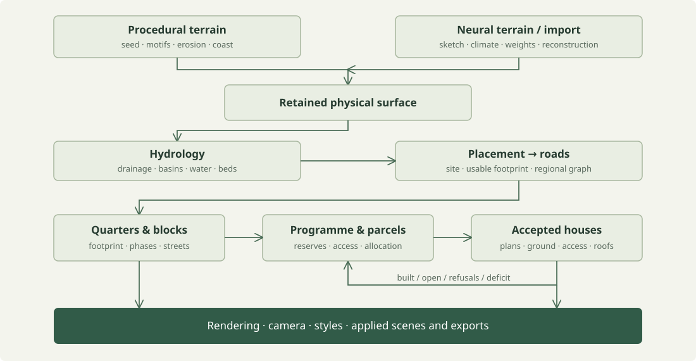
A slope of 0.12 means 12%, or approximately 6.84°. The conversion is angle = atan(slope). Gross density in inhabitants per hectare includes streets and open space; it is distinct from the density of residential parcels alone.
Settings, drafts and applied state
An edited interface field may be a draft. Exports and evidence must identify the configuration that actually produced the scene. Crops translate geometries into their new frame; physical elevations, normals and dimensions are not multiplied by the display’s vertical exaggeration.
Combining projects: a territory or a recipe
Full import preserves the supplied scene. Composition offers two narrower operations. Import a territory adopts its physical grids, sea, rivers and lakes without recomputing terrain or hydrology, while retaining the current urban recipe. Previous sites, roads, towns and geometric edits are discarded: they must be rebuilt on this territory.
Import a settlement recipe instead retains the current territory and imports the other project’s intentions: population, cultures, placement, morphology and declared overrides. Foreign terrain and town geometries are not transplanted. Settings keyed by stable identities belong to the recipe; manual edits to an old building footprint do not have that scope and are not merged.
If the file’s settings are a draft inconsistent with its displayed map, the retained surface becomes a portable FP32 input; the applied biome and computation provenance remain those of the territory. The operation rebuilds natural cover and layers that depended on the removed towns, without claiming to preserve previous agricultural occupation. Composition runs in a worker. The browser replay checks, among other things, the preserved physical fingerprint, removal of obsolete geometry, caching and rebuilding after composition; it does not prove that every recipe is automatically valid on every site.
Code: composition scope and provenance · composition worker · composition regression cases.
The TypeScript generator distributes randomness through named sub-seeds (fork). This separation allows terrain reuse when only urban options change. It does not imply that two engines, versions or GPU backends always produce identical bits.
Code: TerrainGenerator and retained surface · shared randomness · workshop transfers.
Coherent noise, motifs and coasts.
Coherent noise varies continuously in space: nearby points generally receive similar values. The engine combines several frequencies and amplitudes, then warps the evaluation coordinates. An explanatory formulation is:
h(x, y) = landform(x, y) + Σ aₖ N(fₖ · (x + wₓ), fₖ · (y + wᵧ))N is the noise, aₖ its amplitude at octave k, fₖ its frequency and w the domain displacement. Long wavelengths structure the main landmasses; shorter wavelengths carry detail. The local code uses simplex noise: Perlin’s improved noise [1] places this family of constructions in context, but is not an exact description of the implementation.
Map size and motif size have distinct roles. Plains, hills, valleys, mountains, plateaus, canyons, volcanoes and calderas add their own structures. Finite landforms have a position and spatial support; open terrain is evaluated in regional coordinates. Coastal environments produce elevations below and above sea level. This treatment constructs landscape forms; it does not simulate tectonic plates.
The Rust source field uses, among other settings, an internal resolution of 1024². The retained surface and local treatments allow sampling a region without restarting erosion. Filtering excessively fine octaves limits aliasing; oversampling a coarse surface does not add geological observations.
Code: simplex noise and octaves · noise preparation · coasts · families and generation.
Terrain Diffusion and the finite window.
InfiniteDiffusion [6], by Alexander Goslin, makes diffusion sampling lazy and unbounded. Terrain Diffusion applies the algorithm to terrain. Windows use spatially coherent noise and weighted overlaps; they are not independently generated tiles stitched together. The properties of the published algorithm do not automatically become properties of every application that uses its weights.
In Magna Urbis, the documented workflow produces a finite 40 × 40 km window. The planner works backwards from the delivered region to determine the required windows:
| Stage | Nominal scale | Local role |
|---|---|---|
| Coarse | 7,680 m | Regional context, conditioned on a sketch and climate. |
| Base | 240 m | Latent field conditioned on the coarse stage. |
| Decoder | 30 m | Reconstruction of detail and elevation; resampling for the workshop. |
The profile coarse4 → original base in one evaluation → distilled student decoder is a local configuration, with backend variants. The sketch controls large landforms; a depression smaller than the coarse grid is not guaranteed to survive. The imported surface retains its provenance and is not subjected again to procedural erosion and coastal cutting. Hydrology follows.
Model, sampler and distillation
The network, its conditioning and the method that evolves it from noise are three distinct objects. EDM [7] organises their numerical choices; EDM2 [8] studies magnitude control during training. Consistency models [9] can learn generation with few evaluations. This does not justify arbitrarily turning a multistep model into a single-pass model.
Browser mode uses Rust/WASM and WebGPU with external, cached weights; Python mode uses PyTorch/CUDA. Quantisation and precision may differ. Two visually similar outputs do not prove numerical equivalence. Replay evidence must fix the weights and backend.
The current neural engines have no CPU inference path in V2: they require WebGPU in the browser or local Python/CUDA. Neural requests with CPU computation are explicitly refused; they are not silently replaced with procedural noise. CPU computation remains available for procedural terrain and Rust urban generation.
Code: planner · pipeline · reconstruction · WebGPU entry point · CUDA service.
Route, incise, redistribute.
Procedural erosion combines several operations. Priority-Flood [2] constructs a drainage potential from outlets by processing cells in increasing elevation order. A depression’s spill elevation indicates how water could escape; it does not mean that the entire physical ground must be raised to that elevation.
The D∞ routing method of Tarboton [3] evaluates triangular facets around a cell and distributes contributing area between two downstream neighbours. It reduces the bias of D8’s eight fixed directions. The final vector network has its own topology: the area partition used for incision is not the geometry of a drawn river.
The stream-power family of laws
∂h/∂t = U − K Aᵐ Sⁿ
h : altitude ; U : surrection ; A : aire contributive ; S : penteThis equation places the incision model in context. The implicit solver of Braun and Willett [4] handles the downstream dependency of elevations. The local implementation adapts it for interactivity: capped contributing area, a weaker response on gentle slopes, and bounded incision and corrections. The erosion slider controls intensity, with no established conversion into thousands of years.
The engine supplements incision with controlled threshold breaching, basin filling, thermal relaxation beyond the talus slope and hillslope diffusion. These passes modify different aspects of the terrain. Advanced settings expose iterations, incision, slope thresholds, filling, breaching, talus, diffusion and surface treatments. GPU paths use dedicated shaders; their presence does not guarantee bitwise identity with CPU results.
Drainage, basins, then water surfaces.
Flow directions and contributing areas structure a network. Flat areas require a topological ordering, because slope alone does not define a downstream direction. Retained depressions become lakes; others may receive a breach or bounded correction. Initial diagnostics remain distinct from final corrections.
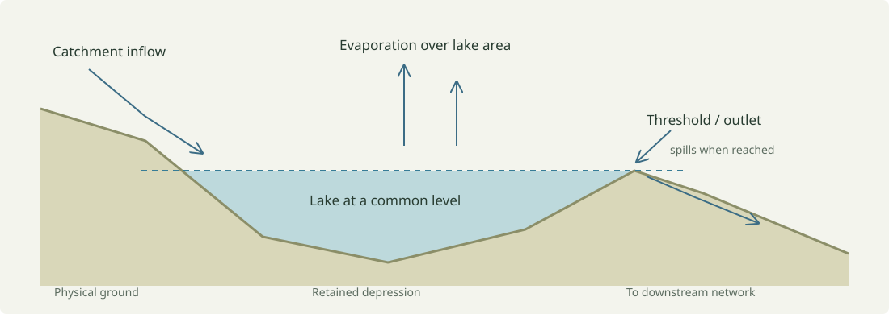
The lake balance is simplified and explicit
The local module computes potential evaporation using elevation-adjusted temperature, followed by an empirical annual evapotranspiration:
Tz = T − 0,0065 · max(z, 0)
L = max(60, 300 + 25 Tz + 0,05 Tz³) [mm/an]
ET = P / √(0,9 + P²/L²)
r = max(P − ET, 0,02 P, 0,5) [mm/an]Runoff floors are generator choices, not natural laws. At equilibrium, catchment inflow approximately balances evaporation from the lake surface. If inflow exceeds evaporation from a full lake, it spills over the threshold and passes on the excess. The module draws inspiration from Fill–Spill–Merge [5] ; it does not reproduce the paper’s entire dynamic hierarchy.
From raster to vector graph
Sources, reaches, confluences and outlets become connected objects. Shared nodes preserve junctions. Width, bed and water profiles are evaluated along centre lines with correction budgets. Meanders add deterministic, multiscale variations constrained by terrain; this is not a complete time-dependent simulation of lateral migration.
A conservative obstacle mask may widen a river for route finding. It must not be mistaken for the drawn bank or physical width. Vegetation rendering therefore uses the displayed water surfaces. This distinction is decisive for narrow rivers and cropped regions.
Code: orchestration · flat areas · the exact annual balance shown above · curves.
Buildability comes before the town’s name.
Settlement placement evaluates dry candidates using slope, freshwater access, coastline, defence, declared preferences and the space actually available. A favourable point is insufficient: population implies a usable footprint, and footprints must respect exclusions and spacing. Candidate ranks and scores can be retained for inspection.
Rank–size mode distributes populations according to Pᵣ ≈ P₁ / rᵠ, with a minimum threshold and a settlement density over usable land. This is a demographic distribution control. The engine does not demonstrate the historical emergence of Zipf’s law from economic exchange.
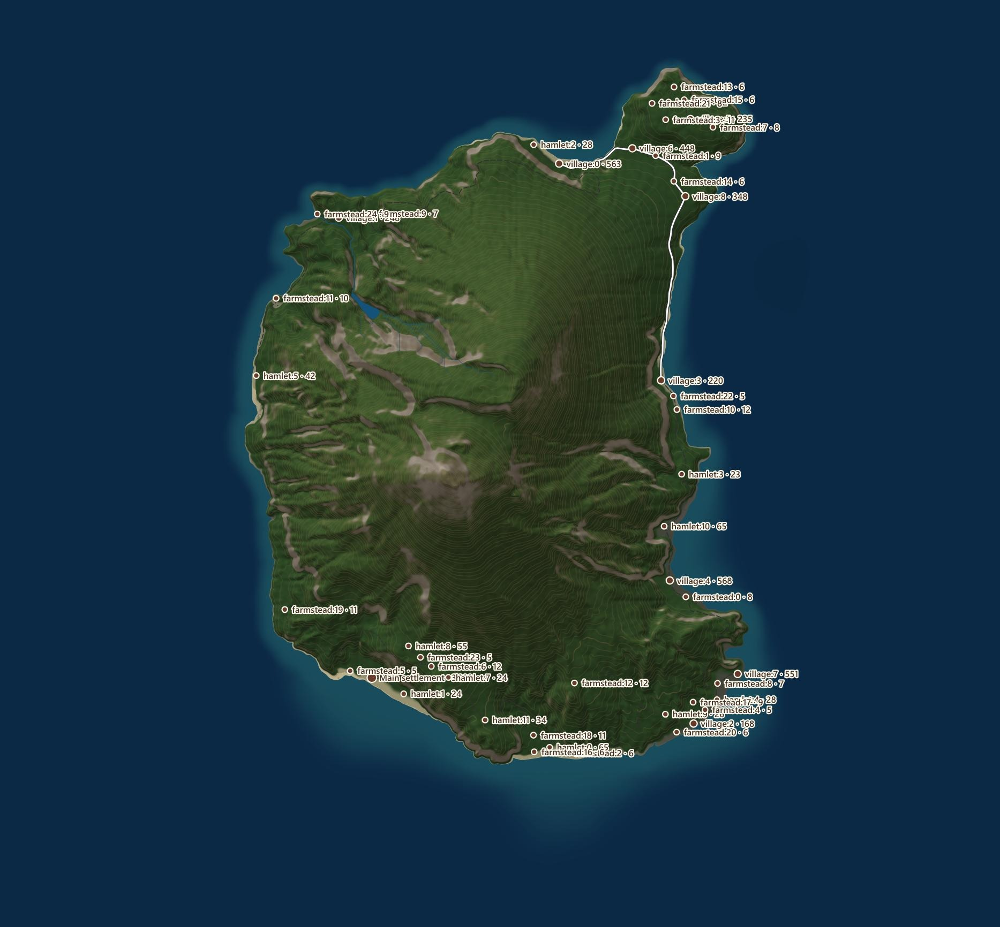
A riverside site is not automatically a navigable harbour. An unknown resource remains unknown. Site data subsequently informs the programme and countryside, without inventing an economy from a colour or cultural name.
Code: candidates, scores, populations and ranks · regional contracts.
A network of links, then physical paths.
The engine selects links between settlements on a Delaunay graph, retains a spanning backbone and adds shortcuts. This demand graph states which places to connect; it is not yet the physical route geometry.
Path search minimises a cost that depends on terrain, gradients, obstacles, turns and reuse of existing roads. State includes the arrival direction: a turn has a cost that depends on the preceding movement. A wider range of moves than the eight neighbouring cells limits rigid trajectories and allows switchbacks. Intersections are then assembled into a planar graph.
C(chemin) ≈ Σ [coût du sol + coût de pente + coût de virage
+ coût des obstacles − avantage de réutilisation]This formulation is an explanatory breakdown, not a copy of the coefficients. Galin et al. [10] provides the reference for this family of anisotropic shortest paths. Magna Urbis road classes, thresholds and crossings are local adaptations. A low cost is not an earthworks, bridge-strength or traffic assessment.
Code: regional network · direction-aware search · V1 TypeScript path.
A town’s shape and its tissue are separate.
The engine distinguishes urban footprint, growth mechanism, local phases/cultures, and then the street network and blocks. An oval enclosure does not force a circular town; an organic footprint can contain a grid extension. This separation prevents a simple street pattern from determining the entire geography.
Budgets and growth Project-specific method
The demographic budget starts from area = population / gross density, converting hectares into m². An artistic budget may instead start from a radius. In demographic mode, radius does not act as a second budget. Planned foundations use area-calibrated vector templates; accessibility-driven growth and organic nuclei use a local anisotropic arrival field bounded to 192².
Cost combines relief, travel gradient, access and spatial noise. Cohesion, satellites, branch depth and gap scale control dispersion. A cell reached by propagation is not necessarily allocated to the town. Small pockets that cannot be served may be discarded, leaving the budget unmet. Nuclei separated by water do not implicitly create a bridge.
Framework, quarters and blocks
Regional approaches guide the macroplan. Quarters retain their identities, recipes and phases; computation sectors follow the framework rather than an arbitrary cut at every age boundary. Routing checks gradients along segments. Widths form metric ribbons, rather than merely visible strokes.
Adaptive servicing adds bounded access where a block is too deep for its recipe: corridors must stay inside the parent land, avoid water and neighbours, and respect gradients. This stage belongs to the plan. Rebuilding parcels retains the streets and blocks ; it must not repair a land deficit by silently moving the network.
Cultures group intentions for morphology, access and architecture. European organic, bastide, medina, Chinese or Japanese plans, communal and fantasy cultures are not synonyms for a perturbed grid. Phase or quarter mixtures remain procedural recipes. Parish and Müller [11] and Chen et al. [12] are comparative references: the local code is not presented as their exact solver.
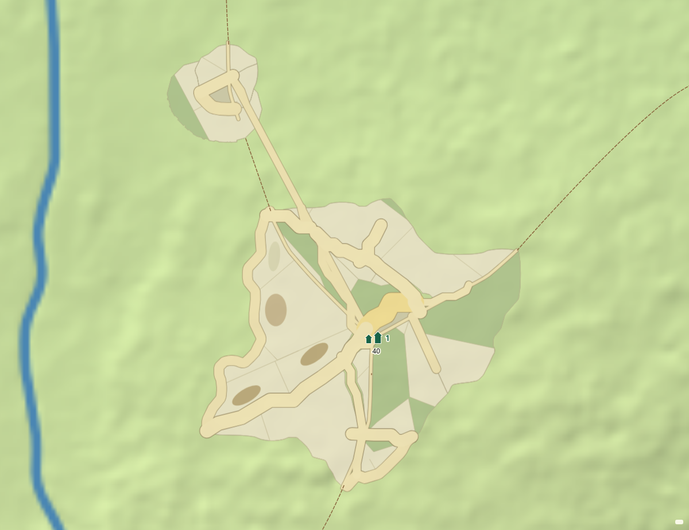
03-norse-hamlet, requested population 40, culture barbarian-norse. This screenshot shows a framework and subdivisions; no group of houses is discernible at this scale. It is not evidence of successful built occupation. Provenance and recipe are retained in the manifest.Code: footprint · macroplan · quarters and blocks · network · detailed method.
Request, reserve, allocate, then count actual results.
The programme receives applied population, settlement role, known resources, cultural context, period, architectural compatibility and lore. It distinguishes domestic, mixed, craft, communal and storage functions, and open space.
A local assumption uses 4.5 people per domestic unit. This is not a historical constant. Roles and declarations modulate needs: a crossroads may request more market space; resource-dependent craft may reserve a domain; a harbour requires explicitly declared navigability. Visible water alone does not establish it.
Reservations and allocation Project-specific method
Before cadastral subdivision, the programme reserves existing, served blocks for demanding functions. Geometry and streets are retained. Selection examines dry land, gradients, access contacts and area suitability. Several blocks may contribute to an open-space intention; a single institution is not artificially multiplied to fill a shortfall.
Neighbouring parcels are found through a spatial index, followed by actual collinear boundary overlap. Nearby centroids do not establish adjacency. Allocation ranks demands by candidate scarcity and applies a two-pass greedy heuristic. The second pass may reassign domestic surplus only if the displaced demand remains covered. This is not a global optimum.
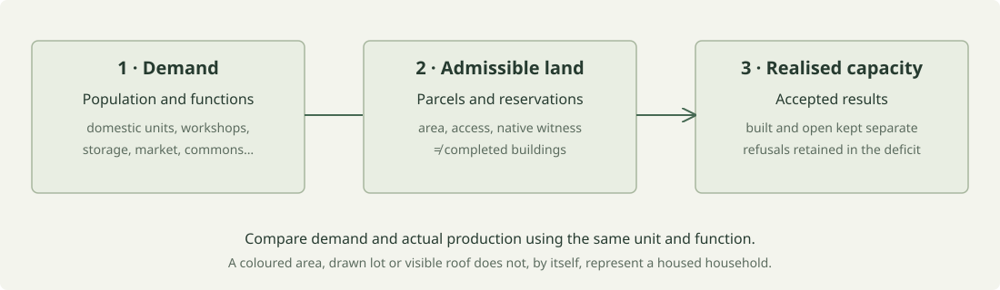
déficit réalisé = max(0, demandé − capacité bâtie − capacité ouverte)
déficit foncier = max(0, demandé − capacité foncière)Domestic land capacity retains one unit per eligible parcel in the current single-building path. A large parcel does not automatically represent several households. Markets and commons contribute to a separate open-space capacity. Architectural refusals leave real unmet demand; colouring an occupied area on the map does not replace an accepted building.
The automatic density budget may be limited by the cadastral module size: average cultural module area, native minimum and phase shares. The residential-share coefficient (0.65) and shape margin (1.15) are prototype planning assumptions, without demographic certification. Explicit manual overrides retain their role.
Code: programme and reconciliation · explicit mappings · assumptions and complete cultural catalogue.
A parcel must be accessible and buildable.
Subdivision consumes retained blocks, their holes, reservations and the local recipe. Land-pattern families include frontage, compact tissue, courtyard, communal domain and inherited land. Architectural family is separate: a shared domain may hold individual houses; a stilt site requires native supports.
Contact is a measured interval
The engine projects block edges onto street segments. It splits intervals by direction, width and distance, then joins them across successive pieces. Qualification uses the parcel boundary and the block boundary. Duplicates must not artificially increase length. A curve discretised into small segments is not a set of independent accesses.
Tolerances described in the note include a band max(0.8 m; 0.3 × half-width), a 14 m distance limit and a 20° angular difference. These are numerical tolerances adapted to existing ribbons, not a cadastral standard.
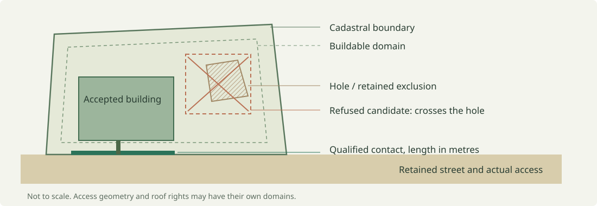
Subdivide and qualify
Strips, oriented cuts and competing frontage territories produce candidates. Witness envelopes must remain contained, including when a hole lies entirely inside a rectangle. Gardens, remnants and reserves retain their identities. An area sum is insufficient: the union must cover the intended parent without overlap and with the same exclusions.
Vanegas et al. [13] places frontage-constrained subdivision in context. The local competing frontage plans form an oriented-distance partition; they are neither a complete straight skeleton nor the published interactive persistence system.
Admission dimensions come from a versioned table produced by the house engine using solved minimum plans. This boundary reduces inconsistencies between subdivision and architecture. A cadastral witness is nevertheless a search hint: actual placement must still check geometry, access and terrain.
Code: parcels · continuous contacts · admission table · method and experiments.
A solved native plan, then physical admission.
The Rust house engine solves a catalogue recipe: bodies, levels, courtyards, circulation, supports, roofs, materials and variants. Cultural mapping is explicit. Similar names do not select a pack at runtime. Strict, inspired and fantasy modes express compatibility policies; “strict” means compliance with the declared recipe ranges, not certification by a historical authority.
Search is bounded Project-specific method
The automatic workflow may examine up to three pack recipes, with target, intermediate and minimum plans. For a given plan, contacts, positions and setbacks are bounded; the note describes up to 324 transformations per parcel for this path. A specific model chosen in Houses retains its own draw and is not replaced by these automatic alternatives.
Once a plan is solved, candidates apply a rigid transformation. A house that does not fit is not clipped at the boundaries to hide failure. Requested coverage, frontage and depth remain bounded by the recipe and dimension policy. A doorway may be narrower than the body: access and built envelope are separate constraints.
Ground and domain do not come from the image
The supplied ground may be a physical raster with bilinear interpolation. Its origin denotes the centre of the first sample. A local plane z = z₀ + gₓ(x−x₀) + gᵧ(y−y₀) remains a compatibility approximation when used. The displayed terrain texture is not a foundation. A separate domain may authorise roof overhangs; otherwise roofs remain within the cadastre.
Volumes and enrichment share the same plan
The lightweight path produces bodies, levels, supports, an access skeleton and native roof facets. It omits rooms, detailed wall/opening operations and ornament. Detailed enrichment reuses the solved plan instead of drawing a second house. Vertex and index compaction preserves facets without loss; it must not be confused with geometric simplification.
Exterior access constraints and physical surfaces must remain consistent between volumes and detail. Accepted houses, refusals and built capacity are counted after admission, then passed to the programme. A recipe collection or a successful House Bench example does not establish that every town lot can accept a house.
Editing a house in V2
An override HouseConfig is attached to the stable identity of a native request, inheriting settlement settings for omitted values. Refusals remain visible and retryable. Current replays demonstrate local invalidation, a single house request in their controlled case, and preservation of other houses. Retaining a snapshot and rebuilding from an edited recipe are distinct contracts: these tests alone do not establish exact replay of every override across all backends and editing sequences. Retained neighbours and the reference scene used before overrides must be part of that verification.
To stabilise edit replay, the adapter retains originals only for houses already touched. It restores a reference scene without duplicating the entire scene, then reapplies the current overrides in stable site order. Retained neighbouring buildings become binding occupations for subsequent requests. More local parameters take precedence; dimensions and storeys remain within source limits. This replay mechanism is a project-specific adaptation, distinct from a general proof of order independence for every possible operation.
The final WASM and native audits exercise a specific case: two storeys globally, three for the settlement, then two for the house. The house setting correctly takes precedence; a four-storey request incompatible with the source is refused. The field recipeReproducesInteractiveEdits records replay of that case’s interactive edits from its recipe, and stageWarningsScoped checks that refusals belonging to a downstream product are not attributed to an earlier stopping stage. This targeted success does not generalise to every catalogue and editing sequence.
Code: neutral intentions · placement · solving · recipes · detailed contract and limitations.
Land use and vegetation cover.
The countryside retains a TypeScript path adapted to Rust site data. Geography, culture and applied context guide land use. Explicit agricultural profiles may request farms on actual rural access routes, outside the retained urban footprint. Programme reservations remain protected; an open growth reserve does not have the same status as a reserved institution.
This pipeline does not compute agricultural yield, food rations or import capacity. A declared resource may have an identified effect in the programme; it does not invent a complete production chain in the countryside.
Canopy and visible trees
Render3D vegetation uses a control field in world coordinates: cover, potential height, conifer share and tone/disturbance. The field accounts for climate and topography. Density is transformed in particular by cᴰ = 1 − (1 − c)ᴰ : this is a cover policy, not a leaf-area measurement.
Riparian galleries have a dedicated envelope tied to visible banks. Tree centres avoid displayed water; crowns may overhang a bank. Using the widened routing mask would produce artificial stepped clearings. At a distance, unresolved cover becomes a material average; up close, crowns become distinguishable. Scale transitions must limit luminance jumps without modifying terrain.
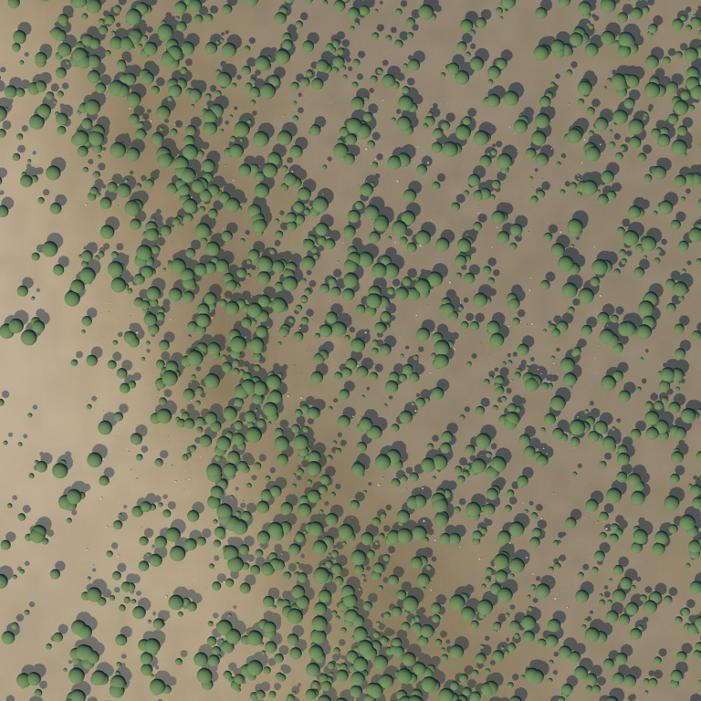
canopy-v9, a 640 m top-down view in the local Godot viewer. This surface path is distinct from web Render3D; it is neither an ecological photograph nor a capture of the latest V2 style. Its original folder contains its manifest and reports.Biomes and seasons remain approximations
Elevation-adjusted temperature, rainfall and topographic-position indices serve as proxies. Seasonality, annual snow and materials have their own documented rules. V2 disturbance coefficients are bounded visual policies. They do not describe ecological succession, stand age or observed snow stocks.
Code: countryside · land-use adapter · forest field · equations and scales · figure evidence.
Presentation consumes the world.
Rendering transforms retained data into shaded terrain, materials, water, vegetation, strokes, labels and built geometry. Parchment, Atlas, diagnostic views, Render3D and V2 do not constitute different physical models. Some paths use temporary adapters and rendering; appearance does not guarantee equivalence.
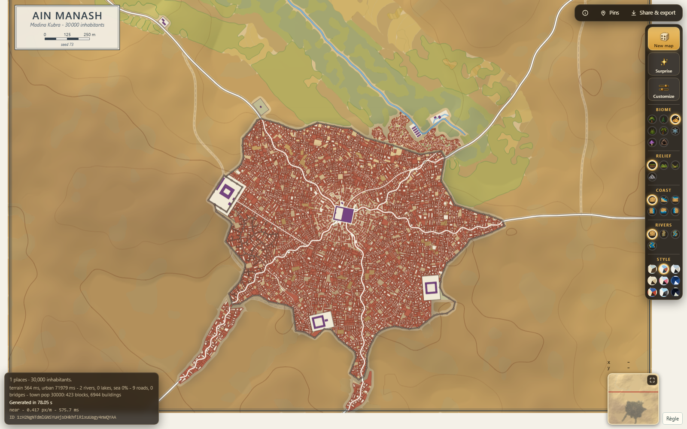
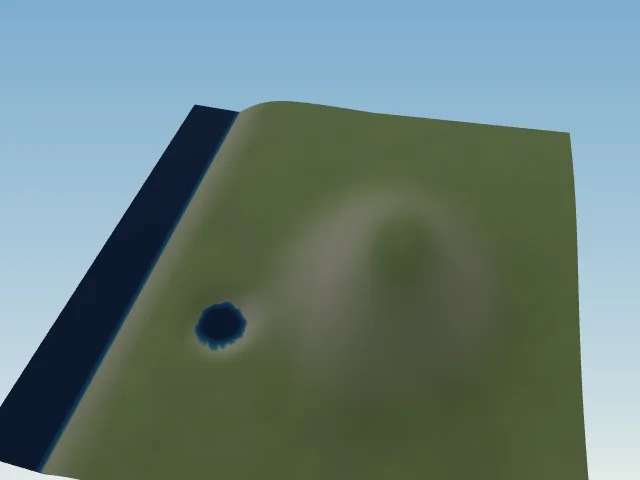
LOD, materials and geometry
Display level of detail may replace a very small roof with a coarse shape and discard off-camera objects. This saves drawing work; the retained native plan remains the architectural authority. An image’s pixel count is neither drainage resolution nor elevation-field resolution.
Materials and canopy have their own spatial scales. A fine texture does not turn a DEM with cells tens of metres wide into centimetre-level topographic measurements. A 3D drawing surface is not the foundation ground, and camera vertical exaggeration must not contaminate physical dimensions.
In the inspected Rust urban V2 integration, the snapshot retains the native scene while its projection to UrbanLayer classifies roofs into display categories such as flat, dome, conical, hip, pagoda and gable. This projection is not an exact rendering of every native facet on the map. “Native geometry retained” and “native geometry fully drawn” require different evidence.
Fantasy cartography and illustration
Brushes may be guided by land-use polygons and their holes, with world-anchored candidates and deterministic hashes. Classification uses a spatial index followed by an exact point-in-polygon test. Anchors are constrained; a painted motif’s edges may extend beyond them. Missing occupation data must not invent a forest.
The illustration module transforms a screenshot using a local or external image model and retains a recipe. This image is an interpretation, distinct from the procedural world and its metrics. It must not be used as evidence of a roof, road or house absent from the retained scene.
Export and replay
SVG/PNG describe a view or visible layers; JSON, decors and snapshots may retain the scene and applied settings. Format and workflow determine what can actually be imported again. Parameter URLs do not necessarily replace an imported raster, an applied scene or neural weights. To archive evidence, retain the content, its fingerprints and the recipe, rather than a URL alone.
Read: native urban rendering · ground, mesh and materials · brushes and land use.
V2 integration: Rust urban snapshots and display projection.
The backend is part of the recipe.
| Path | Where does it run? | Actual scope |
|---|---|---|
| TypeScript | Browser CPU, using workers where available. | Reference pipeline and adapters; V1 development does not require Rust compilation. |
| Rust → WASM | Browser CPU. | Compiled core exposed through numerical bridges and workers. WASM does not automatically enable the GPU. |
| WebGPU compute | Browser GPU, WGSL shaders. | Selected terrain and drainage passes; adapter availability and limits must be checked. |
| Browser neural | Rust/WASM + WebGPU, external weights. | Dedicated inference; allocation, transfers and precision contribute to the cost. |
| Local native service | Rust on the machine, with a computation API. | Urban/house operations and other capabilities declared by the service. Inspect actual capabilities instead of assuming every endpoint exists. |
| Python neural | Local PyTorch/CUDA service. | A separate path with its own models and GPU memory; no bitwise equivalence with the browser is promised. |
| Desktop | Local application and associated services, depending on configuration. | A desktop shell alone does not change the core’s methods, precision or limitations. |
The Rust core is independent of the browser and renderer; WASM crates expose its functions; bridges and interfaces transport results. Procedural shaders are not neural networks. CPU and GPU may each accelerate one subproblem while another stage remains dominant.
Paths actually exercised in V2
The platform report from 28 October obtained finite heights with Rust/WASM CPU, procedural WebGPU terrain, native Rust, Python/CUDA neural generation and WASM/WebGPU neural generation. It retains the announced effective backend, computation provenance, model profiles and identities. These are functional checks of the script’s cases, without guarantees of performance across machines or numerical equivalence between paths.
The desktop startup check observed the “Magna Urbis V2” application and its native Rust child service on an available loopback port. The Tauri shell reuses WebView rendering; weights and Python/CUDA remain optional external dependencies. Installers are built for their target system. This Windows check does not certify Linux installation, every GPU driver or neural operation without those dependencies.
Code: V2 startup and child-service lifecycle · V2 resources and packaging · V2 desktop configuration · checks of executed backends.
Measure a complete workflow
latence ressentie = génération + sérialisation/transfert + adaptation
+ préparation de scène + premier affichage
+ éventuels chargements / enrichissementsA short native computation time is insufficient if transfer or browser preparation blocks. Distinguish cold/warm caches, work required before an image appears and background work. Loading weights, compiling shaders and the selected resolution strongly affect measurements. A small town that does not block does not establish metropolitan-scale performance.
Code: local service · desktop · available commands. Standards: WebAssembly · WGSL.
Evidence must identify what it measures.
This delivery checks the documentation page, internal links, local references, images and layout. It does not rerun every native campaign in the project. The measurements below are historical results from method notes, explicitly bounded to their cases; they are not presented as new benchmarks.
V2 functional replays from 28 October 2026
| Retained evidence | What it exercises | What it does not establish |
|---|---|---|
| Rust/WASM urban generation | The four strict stages, native houses, invalidation of one house and preservation of the others in the controlled case. | Historical quality, universal density or exact replay of every edited recipe. |
| Native Rust urban generation | The same family of stages through the local service, with a declared backend and distinct results. | Bitwise identity with WASM; the reports produce different parcel and house counts. |
| Project composition | Preserved physical territory, a recipe with a distinct scope, cleanup, caching and actual rebuilding through the interface. | Safe transplantation of old geometries onto another site; they are explicitly removed. |
| Terrain platforms | Actual computation on the report’s five paths and retained profiles, with finite values. | CPU neural inference, model equivalence or an isolated benchmark. |
| Windows desktop startup | An open application and a declared Rust child engine on loopback. | Validation of every installer, operating system or external model. |
These reports were produced by project integration checks and then copied into the documentation. The report manifest retains source paths, collection dates and SHA-256 hashes. Recorded timings are not latency guarantees: the development machine and its caches are shared.
A minimum reproduction recipe
- Fix the commit and local changes, catalogue versions, schema and weights with SHA-256.
- Retain per-stage seeds, every appliedsetting, backend, precision, dimensions and any imported raster.
- Describe the machine, browser, GPU, caches and initial loading; time stages separately.
- Archive the snapshot or decor actually rendered, camera, viewport dimensions and raw screenshot.
- Report demand, admissible land, accepted placements, refusals, built/open capacity and deficit, using the units appropriate to each function.
- Define the expected criterion before concluding: geometric invariant, deterministic replay, visual quality or performance. None of these criteria replaces all the others.
Two findings to retain, even when uncomfortable
The parcel note reports an initial retained medina with 74 blocks and 72 streets. Correcting a source increased accepted houses from 4 to 148, but built coverage in the core remained 15.9%. This improves recipe consistency; it does not establish a successful dense souk.
An initial complete native case for 50,000 inhabitants produced 6,188 parcels and 5,336 indicative domestic sites for 11,111 requested units. This mismatch motivated recalibration of the automatic budget. A million-inhabitant probe exceeded 240 s and was stopped: no metropolitan performance result is claimed. These figures describe tests preceding later corrections, on the machine used for their review.
Useful commands, to run in their own context
# Depuis la racine du dépôt : documentation seule
node docs/scientific/check.mjs
node docs/scientific/build.mjs
# Depuis web/ : application et tests ciblés (dépendances requises)
npm ci
npm run dev
npm run dev:terrain
npm run prepare:v2
npm run dev:v2
npx vitest run --project fast tests/urban.snapshot.test.ts tests/urban.landuse.test.ts
# Depuis rust/ : exemples de familles de tests natives
cargo test -p magna-urbis-core --lib urban::programme
cargo test -p magna-urbis-core --lib urban::footprintRust commands require the repository’s toolchain and dependencies. Native replay scripts require a current executable build: an old binary cannot measure a recent source change. Directories such as web/out/ are often ignored; a path mentioned in a note may be missing from another checkout.
Which invariants should each stage test?
| Stage | Meaningful checks |
|---|---|
| Terrain | Finite values, units, support and continuity; preservation when the camera changes. |
| Water | No loops, consistent levels, connected confluences, corrections within budget. |
| Networks | Connections, gradients, obstacles, authorised crossings and explicit intersections. |
| Land | Containment, holes, union/coverage, no overlaps, actual access, unchanged streets when recalculating. |
| Houses | Accepted recipe and period, consistent plan/volume/detail, contained roofs and access, physical ground. |
| Programme | Consistent units, refused requests not consumed, open capacity separate from built capacity, real deficits left visible. |
| Image | The scene actually applied, known camera and scale, no missing layer; explicit visual inspection. |
Measurement provenance: parcel methodology log. Native protocol: urban API replay.
What remains to be established.
| Domain | Current limitation | Evidence required to go further |
|---|---|---|
| Geomorphology | Artistic intensities and bounded corrections; no global geological calibration. | Balances, time units, reference cases and documented sensitivity. |
| Hydrology | Simplified annual balance; no flood, tide or navigation forecast. | Dedicated time-dependent data and physical validation. |
| History and culture | Declared catalogues and influences; parametric recipes rather than universal reconstruction. | Sources contextualised by period/site, comparison with actual plans and specialist review. |
| Demography | Domestic assumptions and indicative densities; land and buildings may fall short. | Counts of accepted buildings, explicit occupation and published deficits. |
| Architecture | Bounded placement search; a refusal may indicate search failure or a real incompatibility. | Minimal cases, refusal diagnostics, comparison with a more complete search. |
| Ecology and snow | Climate proxies and cover policies; unobserved visual details. | Separate calibration, seasonal variability and an independent corpus. |
| Large scale | CPU cost, transfers, memory and rendering not established for every population. | Reproducible end-to-end campaigns, cold/warm caches and failed cases included. |
| Portability | Backend and precision affect outputs; GPU support varies. | Replays across machines, defined tolerances and actual fallback tests. |
| Documentation | A snapshot of an active repository; some older screenshots have incomplete provenance. | Revised fingerprints, new capture recipes, and links and claims updated together. |
A successful geometric test does not certify urban quality. An attractive screenshot does not certify housing capacity. A native timing does not certify application responsiveness. The project’s value rests on making these distinctions traceable all the way to source code and artifacts.
A few terms, each with one local definition.
- Retained surface
- Stored elevations and corrections, reused by subsequent stages and views.
- DEM / elevation raster
- Elevation samples on a grid; interpolation does not create newly observed data.
- Contributing area
- Upstream surface whose routed flow contributes to a cell or reach.
- Drainage potential
- The elevation and ordering required for routing; distinct from physically corrected ground.
- Anisotropic
- Having a cost or response that depends on direction.
- Urban footprint
- Land allocated to a settlement; distinct from the street pattern and individual building footprints.
- Block
- A land domain retained by the plan and its access network, before cadastral subdivision.
- Cadastre / buildable domain
- Retained property / the subdomain where construction is admitted. Holes and reserves remain exclusions.
- Frontage contact
- A boundary interval actually connected to an authorised access segment, measured in metres.
- Native admission witness
- An envelope from a solved minimum plan, useful for qualifying land; final placement retains authority.
- Programme
- Functional demands, reservations and allocation, followed by the actual balance after production.
- LayoutPlan
- A solved, retained native architectural plan shared by volumes and detailed enrichment.
- LOD
- Presentation level of detail. It does not, by itself, modify the retained physical scene.
- Backend
- The execution path and computation hardware; retain it with the recipe.
Annotated bibliography and influences.
References verified online on 28 October 2026 using author, publisher or project pages. The local contribution is identified to distinguish influence, adaptation and validation. The papers are not copied into this site.
- Perlin, K. (2002). Improving Noise.
Context for coherent gradient noise. The project uses 2D simplex noise; this paper does not describe that code exactly.
- Barnes, R., Lehman, C. & Mulla, D. (2014). Priority-Flood: An Optimal Depression-Filling and Watershed-Labeling Algorithm for Digital Elevation Models. Computers & Geosciences 62, 117–127. DOI: 10.1016/j.cageo.2013.04.024.
The authors’ reference and repository for depressions and basins; locally adapted in erosion and drainage.
- Tarboton, D. G. (1997). A New Method for the Determination of Flow Directions and Upslope Areas in Grid Digital Elevation Models. Water Resources Research 33(2), 309–319.
Facet-based direction and D∞ area partitioning; distinct from the final vector graph.
- Braun, J. & Willett, S. D. (2013). A Very Efficient O(n), Implicit and Parallel Method to Solve the Stream Power Equation Governing Fluvial Incision and Landscape Evolution. Geomorphology 180–181, 170–179. DOI: 10.1016/j.geomorph.2012.10.008.
The family of implicit incision solvers. Magna Urbis bounds and interactive parameters remain local. Metadata verified in the author’s institutional GFZ repository; the publisher page was unavailable to the automated reader during that review.
- Barnes, R., Callaghan, K. L. & Wickert, A. D. (2021). Computing Water Flow through Complex Landscapes — Part 3: Fill–Spill–Merge. Earth Surface Dynamics 9, 105–121.
Filling, spilling and merging depressions. The local module uses a simplified equilibrium balance rather than the entire published dynamics.
- Goslin, A. (2025, revised 2026). InfiniteDiffusion: Bridging Learned Fidelity and Procedural Utility for Open-World Terrain Generation. arXiv:2512.08309v4, 3 May 2026.
Lazy, unbounded algorithm and Terrain Diffusion application. Magna Urbis computes a finite window with its own planner.
- Karras, T., Aittala, M., Aila, T. & Laine, S. (2022). Elucidating the Design Space of Diffusion-Based Generative Models.
EDM: decomposition of choices in model design, preconditioning, training and sampling.
- Karras, T. et al. (2024). Analyzing and Improving the Training Dynamics of Diffusion Models.
EDM2: magnitude control; context for network architecture, not evidence of urban quality.
- Song, Y., Dhariwal, P., Chen, M. & Sutskever, I. (2023). Consistency Models. PMLR 202, 32211–32252.
Generation in one or a few evaluations, trained directly or distilled.
- Galin, E., Peytavie, A., Maréchal, N. & Guérin, E. (2010). Procedural Generation of Roads. Computer Graphics Forum 29(2), 429–438. DOI: 10.1111/j.1467-8659.2009.01612.x.
The anisotropic shortest-path family; the project has its own costs, classes and limits.
- Parish, Y. I. H. & Müller, P. (2001). Procedural Modeling of Cities. SIGGRAPH, 301–308.
Comparative reference: global goals and local constraints for L-system urban growth.
- Chen, G., Esch, G., Wonka, P., Müller, P. & Zhang, E. (2008). Interactive Procedural Street Modeling. ACM Transactions on Graphics 27(3), article 103.
Comparative reference: tensor fields and street-graph editing. No complete implementation of the solver is claimed.
- Vanegas, C. A., Kelly, T., Weber, B., Halatsch, J., Aliaga, D. G. & Müller, P. (2012). Procedural Generation of Parcels in Urban Modeling. Computer Graphics Forum 31(2pt3), 681–690.
Reference for constrained urban subdivision; local cuts and frontage territories are a partial adaptation.
Projects, heritage and architectural sources
- TownGeneratorOS — Oleg Dolya / Watabou : the initial influence explicitly acknowledged by Magna Urbis. The original Python port was retired; current implementations continue the exploration.
- Terrain Diffusion — author’s code : learned terrain models and infrastructure.
- Neural Earth : associated planetary project; complete urban integration remains to be done.
- World Orogen : Neural Earth’s planetary context, distinct from Magna Urbis local erosion.
For architectural traditions and periods, consult recipe-specific sources and catalogue reviews; a general geometry bibliography cannot replace them. The repository includes sourced notes on compact Roman domestic architecture and Javanese domestic architecture. Source coverage is uneven; fantasy cultures declare their influences.
Internal inventories: architectural styles · settlements · architectural inventory and fingerprints.
One section per generation stage.
Each stage listed in the V2 interface has a section here, opened by the “?” beside its row. A section says what the stage computes, the method used in the code, its inputs and outputs, the controls and their effect, when it is available, what it costs, and where to read more. Stage identifiers are stable and listed in the stage registry contract.
The pipeline
Relief comes from exactly one of three sources, then flows through the shared posterior operators. Water and natural cover, settlements, and the city read the retained surface. Display stages only consume. Optional stages can be switched off in the interface; a required stage has a locked checkbox.
Stage index
- Region
- Source: procedural, neural, imported or library heightmap
- Input climate
- Custom mask (zones, brushes, import/export)
- Grids and buffers
- Initial noise and uplift
- Regional evolution (uplift, drainage, incision, thermal, diffusion)
- Final regional relaxation
- Reconstruction (bicubic / B-spline, domain warp)
- Amplitude calibration (p99)
- Ridged detail
- Surface erosion
- Datum normalisation (p1)
- Phasor detail
- Neural coarse diffusion
- Neural base diffusion
- Neural decoder / amplification
- Heightmap fit (resample, vertical scale, datum, crop)
- Fractal refinement
- Posterior fluvial conditioning
- Aeolian transport
- Coastal finishing
- Hydrology: depressions, lake water budget, drainage graph, rivers, riverbed cuts
- Natural cover (forest)
- Settlements
- Site placement and urban reserves
- Place hierarchy
- Regional roads (cost fields, A*, bridges)
- Composition: footprint, macroplan, harbour, fortification
- Quarters: streets, split, blocks, bridges
- Trim of unbuilt blocks
- Parcels (cadastre)
- Programme allocation (roles, demands)
- Building sites and massing
- Architecture / detailed houses
- Map
Relief
The relief stage produces one signed height field in metres (above sea level), retained at a fixed physical resolution. Three families of sources feed it; every later stage reads only that retained field, never the generator that made it. The posterior operators at the end apply to every source.
Source: procedural, neural, imported or library heightmap relief-source Always required
What and why. Chooses where the elevations come from and fixes the frame of the whole run: seed, square map width in metres, landform scale and compute backend. Everything downstream is deterministic given this recipe, so the source is the first line of the recipe and of the share link.
Algorithm. Procedural: coherent noise plus a bounded landscape-evolution simulation (stages below). Neural: a three-stage diffusion model (coarse, base, decoder) sampled on a finite window. Imported or library heightmap: a raster resampled into the frame. The three paths converge on the same retained surface.
Inputs and outputs. In: source kind, seed, width (m), landform scale (m), backend, optional file. Out: the recipe that selects which of the stages below run.
Controls. Source menu (Procedural with Classic or Compact preset, Neural, Heightmap, Library), seed, width presets (5, 10, 25, 50 km), landform scale, relief family, climate, master erosion dose, backend. The old name procedural-phasor survives only as a saved-recipe alias.
Cost and backends. Procedural runs on CPU (Rust compiled to WebAssembly, or the native service), on WebGPU, or hybrid (GPU noise, CPU erosion). Neural runs in the browser (Rust/WASM + WebGPU) or in the local Python/CUDA service. Heightmaps need no heavy compute. The backend belongs to the recipe: CPU and GPU solvers are not promised bit-identical.
Method note : procedural-generation-stages.md
Input climate relief-climate
Climate is an initial condition: temperature, seasonality and rain reach the neural model before diffusion, then feed climate-driven erosion, water budgets and vegetation. A row of icons in Region’s top frame selects the preset; this stage contains the detailed values. Regional biome remains a separate choice. Disabling forest does not disable climate.
Custom mask (zones, brushes, import/export) relief-mask Procedural source can be switched off
What and why. Lets the author impose where mountains, plains, valleys or coast go. It is an interactive input, not a GPU kernel: painted zones replace the automatic relief layout while the rest of the pipeline is unchanged.
Algorithm. A transparent overlay on the main map records zone labels with brush radius and falloff, with undo history. When the mask is active the grouped Rust zone generator evaluates each painted zone with the selected preset; unpainted ground stays transparent in the editor. Zone maps and heightmaps can be imported and exported.
Inputs and outputs. In: brush strokes, imported zone map or heightmap. Out: a zone field used as the structural layout for the next stage.
Controls. Zone brushes, eraser, size, falloff, history, import/export; the stage checkbox switches between automatic and manual layout while keeping the painted zones.
Cost and backends. Cheap: a raster edit plus one zone generation. Painted-zone terrain uses the original zone generator rather than the automatic CPU/GPU stage scheduler.
Method note : procedural-generation-stages.md
Grids and buffers relief-grids Procedural source required
What and why. Allocates the two resolutions of the simulation: a coarse regional grid on which the landscape evolves, and the retained surface on which details are added. Resolution is a budget: finer grids resolve narrower valleys but cost more per evolution cycle.
Algorithm. The retained physical field is always 1024 by 1024, so a 5 km map has 4.88 m samples and a 50 km map 48.83 m. The compact preset simulates a padded domain 1.44 times the map width; its side is the target cell width (100, 65 or 40 m for fast, balanced, detailed), rounded up to a multiple of 16 and clamped to 64 to 384 cells. Per-cycle uplift and incision are rescaled so the cumulative dose stays comparable.
Inputs and outputs. In: width, landform scale, quality. Out: regional and surface dimensions, working buffers (destroyed after each run; compiled GPU pipelines stay cached).
Controls. Compact quality (Fast 8 cycles, Balanced 12, Detailed 20), explicit grid overrides in the procedural recipe block.
Cost and backends. Increasing the map width does not increase output resolution: this is not metre-scale terrain over 50 km. At large extents the 384-cell cap makes the regional cell wider than the target.
Method note : compact-terrain-phasor.md
Initial noise and uplift relief-noise Procedural source required
What and why. Builds the starting surface and the tectonic forcing U that the erosion cycle will carve. Mountains, hills, valleys, canyons, plains and high mountains differ by their uplift pattern and noise recipe. This is a landscape shape, not a plate-tectonic simulation.
Algorithm. Octaves of coherent simplex noise with domain warping, h = shape + sum a_k N(f_k (x + w)), where a_k and f_k are amplitude and frequency of octave k [1]. Mountain regimes get a continuous regional weight (no clamped band) that multiplies uplift along a ridge skeleton: uplift *= 1 + crest * weight * (0.24 + 1.8 ridge^2 - 1). Because the crests exist before erosion they join the drainage instead of being masked by late texture.
Inputs and outputs. In: seed, relief family, mountain mixture, noise scale, crest strength. Out: initial regional heights and uplift field.
Controls. Regional noise scale, structural crest strength, relief family, mountain mixture.
Cost and backends. One pass per grid cell; runs on GPU or CPU. The CPU reference keeps the original Rust regional generator, so the two shapes agree statistically, not bit for bit.
References. Noise: Perlin [1].
Method note : compact-terrain-phasor.md
Regional evolution (uplift, drainage, incision, thermal, diffusion) relief-regional Procedural source required
What and why. Lets rivers and slopes organise the surface: uplift raises ground, water routes along the steepest path and cuts valleys, hillsides slump, and diffusion softens what is left. After a few cycles the random noise has become a connected drainage with ridges, valleys and fans.
Algorithm. Each cycle is a dependent sequence. (1) Uplift. (2) Basin drainage: Priority-Flood [2] floods outward from the outlets in order of increasing height, giving every cell a drainage potential; sills of closed basins are carved by a fraction (0.1) of their depth per step while basins also fill with sediment (fill multiplier 3), so plains survive and drain instead of staying closed. (3) Accumulation: flow is split between two downhill neighbours on triangular facets (D-infinity [3]), reducing the eight-direction bias. (4) Implicit stream-power incision, dh/dt = U - K A^m S^n, solved downstream-first in the manner of Braun and Willett [4], with capped contribution and damped response on gentle slopes. (5) Thermal relaxation: material above the talus angle slides down. (6) Hillslope diffusion. Graph convergence is checked and retried rather than assumed after a fixed number of relaxations.
Inputs and outputs. In: initial heights and uplift. Out: evolved regional heights, drainage area and flow directions.
Controls. Cycle count, uplift multiplier, incision, onset slope, basin fill, sill carving, talus, thermal rate, diffusion; the climate preset scales water incision and thermal rates (for example tropical x1.8 incision, arid x0.35). Thermal relaxation and diffusion can be disabled separately; drainage and incision cannot be separated because incision reads the flow data.
Cost and backends. Dominates the procedural cost; cost scales with cycles times regional cells. GPU kernels (WGSL) and a CPU solver (priority flood) exist, so topologies of the two may differ. The erosion dose is an intensity, not a conversion to years; sediment mass is not conserved globally.
References. Also: Howard 1994 (detachment-limited stream-power incision); Musgrave, Kolb and Mace 1989 (thermal and hydraulic erosion for terrains). See chapter 04.
Method note : compact-terrain-phasor.md
Final regional relaxation relief-relax Procedural source can be switched off
What and why. Removes the artefacts of the last evolution cycle (fresh pits, steep one-cell steps) without adding uplift, so reconstruction starts from a settled, drainable surface.
Algorithm. A last sill-carving and drainage pass followed by thermal relaxation, using the same kernels as the cycle but with no uplift term.
Inputs and outputs. In: evolved regional heights. Out: relaxed regional heights and drainage.
Controls. Final sill carving, thermal relaxation and drainage switches.
Cost and backends. One extra pass at regional resolution; negligible next to the cycles.
Method note : procedural-generation-stages.md
Reconstruction (bicubic / B-spline, domain warp) relief-reconstruct Procedural source required
What and why. Resamples the coarse regional field onto the 1024-square retained surface. The interpolant matters: an interpolating spline can overshoot and invent pits or ridges, which would then misguide hydrology.
Algorithm. Either a bounded bicubic interpolation (cubic convolution) or a positive cubic B-spline; the compact preset uses the B-spline, whose non-negative weights cannot overshoot. A domain warp displaces the lookup coordinates so that valley lines do not follow grid axes; the warp multiplier sets its strength.
Inputs and outputs. In: relaxed regional heights. Out: full-resolution surface heights.
Controls. Engine default, bounded bicubic or positive B-spline; domain warp multiplier.
Cost and backends. Linear in output cells (about one million); fused with later passes on GPU.
Method note : compact-terrain-phasor.md
Amplitude calibration (p99) relief-calibrate Procedural source can be switched off
What and why. Makes the relief amplitude predictable: after erosion the highest points depend strongly on the seed, so the field can be rescaled to a target relief.
Algorithm. The 99th percentile of heights is measured and the field is scaled so that it matches the target; a percentile ignores rare spikes that a maximum would obey. Off, the evolved physical amplitude is kept.
Inputs and outputs. In: surface heights. Out: rescaled heights (one multiplicative factor).
Controls. Switch and target amplitude.
Cost and backends. A histogram or sort of 1M values; the GPU path evaluates the calibrated height into a read-out buffer and the next detail kernel applies the same scale.
Method note : procedural-generation-stages.md
Ridged detail relief-detail Procedural source can be switched off
What and why. Adds fine rocky texture on slopes, which the coarse regional grid cannot carry. It precedes surface erosion so that the next stage can organise and soften it instead of leaving raw noise.
Algorithm. A ridged multifractal term (1 - |n| of coherent noise, summed over octaves) modulated by slope, added to the surface heights.
Inputs and outputs. In: calibrated heights. Out: heights with fine ridges.
Controls. Amplitude (default off in the compact preset, on in Classic).
Cost and backends. One pass per surface cell.
Method note : procedural-generation-stages.md
Surface erosion relief-surface Procedural source can be switched off
What and why. Runs the same erosion operators as the regional cycle, at the full 1024-square resolution and for a few cycles, to carve small gullies and soften the ridged detail. Disabled by default in the compact preset, which relies on the Phasor stage instead.
Algorithm. Priority-flood routing, D-infinity accumulation, implicit incision, thermal and diffusion passes, with a routed or strict flow mode for depressions and optional sill carving.
Inputs and outputs. In: detailed surface. Out: eroded surface and its drainage.
Controls. Cycles, incision, routed or strict flow, sill carving, thermal rate, diffusion.
Cost and backends. Linear in surface cells times cycles.
Method note : procedural-generation-stages.md
Datum normalisation (p1) relief-datum Procedural source can be switched off
What and why. Pins the lowest ground to a known height so the land floor is stable across seeds: sea level, coasts and lakes are defined relative to it.
Algorithm. The 1st percentile of heights is shifted to 1 m. Independently, the positive land-input floor of 0.3 m is always enforced for later stages.
Inputs and outputs. In: eroded heights. Out: shifted heights.
Controls. Switch (the 0.3 m floor stays required).
Cost and backends. A percentile and an addition.
Method note : procedural-generation-stages.md
Phasor detail relief-phasor Procedural source can be switched off
What and why. Adds sub-regional ridges and ravines whose crests follow the contour lines of the terrain, which plain noise does not do. It is an optional detail on either preset and changes the physical heights.
Algorithm. A GPU adaptation of phasor noise as used for terrain amplification (Tricard et al. 2019; Grenier et al. 2024): each octave sums jittered Gabor impulses, z = sum w_j exp(i phase_j), with carrier directions along the regional contour tangent, and a bounded triangle-like profile (2/pi) asin(Re z / sqrt(|z|^2 + eps)). At most three octaves, wavelength ratio 3, base wavelength clamp(scale/24, 48, 160) m; amplitude min(0.025 wavelength, 0.12 slope wavelength) fading on flat ground, valley floors and near sea level. Wavelengths below four output cells are suppressed.
Inputs and outputs. In: surface heights and slope. Out: heights plus detail.
Controls. Phasor intensity (zero turns it off).
Cost and backends. Fused into the final output-packing dispatch, so it needs no full-size intermediate texture. At 50 km most small octaves are absent because they fall below the cell size. The detail is not a drainage network that was physically evolved.
References. Method note on compact terrain and Phasor; image below from that note.
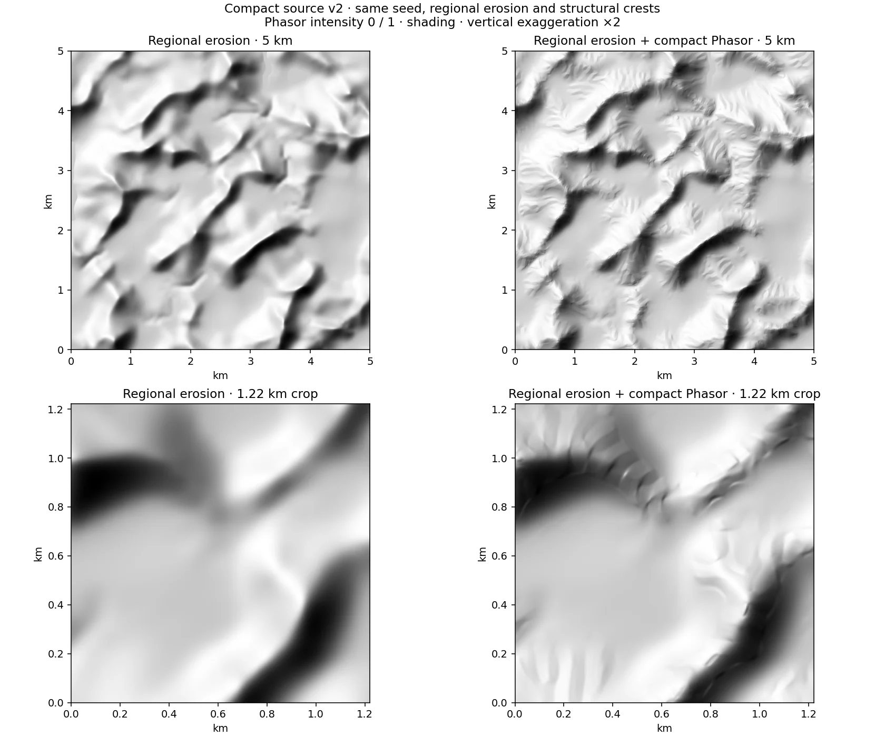
Method note : compact-terrain-phasor.md
Neural coarse diffusion relief-neural-coarse Neural source required
What and why. First of three learned stages: it draws the continental-scale layout (land and sea, major mountain belts) of the finite window from noise, conditioned on seed and position.
Algorithm. A diffusion model in the family of the EDM formulation [7][8] with consistency-model style few-step sampling [9], used in the InfiniteDiffusion arrangement [6] where tiles are sampled in global coordinates so a window can be extended without a seam. The coarse stage works on a low-resolution grid of the window.
Inputs and outputs. In: seed, window position and size, model weights. Out: coarse height and the latents the next stage is conditioned on.
Controls. Seed, window; the model profile is part of the recipe identity.
Cost and backends. Inference in Rust/WASM + WebGPU in the browser, or PyTorch/CUDA in the local service; weights are external and loading is a notable part of the first call. The window is finite: the model does not tile an infinite world automatically here.
References. Goslin [6], Karras et al. [7], [8], Song et al. [9]; see chapter 03.
Method note : neural-earth-amplification.md
Neural base diffusion relief-neural-base Neural source required
What and why. Refines the coarse layout into a base terrain with coherent valleys and ridges at intermediate scale, still conditioned on the coarse result so that large features are not redrawn.
Algorithm. A second diffusion stage conditioned on the coarse output sampled at the matching coordinates; tiles carry a halo so neighbours agree on their overlap.
Inputs and outputs. In: coarse output, seed, position. Out: base-resolution heights.
Controls. Same recipe identity as the coarse stage.
Cost and backends. Same inference backends as the coarse stage; cost grows with the window area at base resolution.
Method note : neural-earth-amplification.md
Neural decoder / amplification relief-neural-decoder Neural source required
What and why. Produces the final metre-scale heights from the base terrain (decoder) and, below the model’s own resolution, adds detail on the retained surface (amplification: Classic, Phasor, Hybrid or MSE modes).
Algorithm. The decoder turns base latents into heights. Amplification samples a reference on its native 30 m lattice, subtracts its coastal base and adds only the residual to the retained Magna spline, with a gain near zero elevation that preserves the land or sea sign. Levels 1 to 6 use cell = 30 * displayScale / 2^level. MSE is a windowed multiscale erosion after Schott et al.; Phasor and Hybrid follow Grenier et al.
Inputs and outputs. In: base latents or the retained height grid, width, seed, method. Out: refined heights; level 0 returns the retained spline unchanged.
Controls. Amplification method, intensity and level (these currently use the local Python service).
Cost and backends. A decoder-backed branch requires the original neural world; procedural and imported sources run amplification without weights (decoder octave zero). Local windows cannot supply their own upstream discharge, so hydrology on a window is a compatibility check, not globally correct catchments.
References. Method note: neural-earth-amplification.md.
Method note : neural-earth-amplification.md
Heightmap fit (resample, vertical scale, datum, crop) relief-heightmap-fit Imported or library heightmap required
What and why. Brings an external raster into the same frame as generated terrain: physical width in metres, heights in metres above sea level, positive land floor. It is the only relief stage for an imported or library map.
Algorithm. Crop to the chosen window, resample to the retained grid (interpolated), apply a vertical scale and datum offset, enforce the land floor. No erosion is applied unless the posterior stages below are switched on.
Inputs and outputs. In: image or raster, crop rectangle, vertical scale, datum. Out: the retained height field.
Controls. Crop, vertical scale, datum, width.
Cost and backends. Cheap and CPU-only. A heightmap with a low native resolution is only upsampled: no geological detail is created.
Method note : procedural-generation-stages.md
Fractal refinement relief-refine Always can be switched off
What and why. Adds plausible detail below the source raster’s cell when the view zooms in, so close-ups do not show a smooth interpolated surface. It never changes the retained source used by hydrology.
Algorithm. Fractional Brownian detail summed over octaves: amplitude ∝ wavelength^H (Hurst exponent H), successive wavelengths divided by the lacunarity, starting at a wavelength given in source cells. The amplitude is modulated by the local slope, ∝ (slope + flat)^γ, so flats stay calm and steep ground gets rough.
Inputs and outputs. In: the retained height field and the camera region. Out: refined heights for that region only.
Controls. Amplitude (source cells at a 45° slope), Hurst exponent, lacunarity, octaves, first wavelength, slope exponent γ.
Cost and backends. Evaluated per displayed region, on the fly; cost scales with the visible samples, not the map size.
Method note : procedural-generation-stages.md
Posterior fluvial conditioning relief-conditioning Always can be switched off
What and why. Gives any source, including imports and neural windows, a drainage that actually connects, by erosion and breaching applied after the source is final.
Algorithm. An existing CPU conditioner: stream-power erosion on the routed drainage, breaching of spurious depressions, or both. Breach depth and length are bounded so a pit is opened rather than a canyon.
Inputs and outputs. In: retained heights. Out: conditioned heights.
Controls. Mode (erosion, breaching, both), strength, maximum breach depth and length; climate presets set defaults (0 temperate, 0.7 Mediterranean, 1.5 tropical).
Cost and backends. CPU, linear in cells with the drainage solver. Presets are artistic regimes, not calibrated rainfall-driven evolution.
Method note : procedural-generation-stages.md
Aeolian transport relief-aeolian Always can be switched off
What and why. Shapes arid terrain by wind: dune-like erosion on windward ground and deposition in lee areas. It is a visual regime, not a dune-physics model.
Algorithm. A directional transport pass: along the wind direction, material is lifted from exposed cells and deposited downwind, capped per pass; iterated several times. GPU kernel with a CPU reference for CPU generation.
Inputs and outputs. In: heights. Out: heights with wind-redistributed material.
Controls. Iterations, wind direction, maximum transported metres per pass (arid default: 12 passes, 0.8 m).
Cost and backends. Passes are linear in cells; the arid preset is the main user of it. The cold preset does not simulate glaciers.
Method note : procedural-generation-stages.md
Coastal finishing relief-coasts Always can be switched off
What and why. Defines the sea: the marine directions and islands, a signed distance to the shore (positive inland), and a short coastal erosion that gives beaches, cliffs and coves.
Algorithm. A capsule-based coastline plan (broad mainland sectors, branched islands, offshore rocks) is shared by GPU and CPU in FP32. The signed distance modulates heights across the shore, and coastal cycles apply incision, thermal relaxation and diffusion with their own multipliers. The compact preset uses the marine mask with a compact surface erosion pass.
Inputs and outputs. In: heights, coast settings. Out: heights with a marine mask and shore distance.
Controls. Marine directions, island selector, coastal cycles and incision/thermal/diffusion multipliers.
Cost and backends. A distance computation and a few erosion passes near the shore only.
Method note : procedural-generation-stages.md
Choose the land/sea mask and islands in Region’s top frame. This advanced stage controls procedural coastal finishing. Neural generation receives the mask in its sketch before diffusion and does not run this procedural finishing stage.
Water and natural cover
These stages read the retained relief and add the water surfaces and vegetation climate that settlements and rendering consume.
Hydrology: depressions, lake water budget, drainage graph, rivers, riverbed cuts water-hydrology Always can be switched off
What and why. Turns elevation into water: which hollows hold lakes, which cells drain where, where rivers run and how wide, and how their beds are cut into the ground. Settlements, roads and rendering all rely on one shared definition of water.
Algorithm. (1) Drainage and flats: Priority-Flood [2] gives every cell a drainage rank; flat equal-spill-level components receive a convergent metric drainage so water does not stagnate. (2) Depressions: whole spill basins are retained or rejected, never a lowered level that would invent an outlet. (3) Lake water budget: temperature corrected by lapse rate Tz = T - 0.0065 max(z,0), annual potential evaporation L = max(60, 300 + 25 Tz + 0.05 Tz^3) mm, Turc-Pike evapotranspiration ET = P / sqrt(0.9 + P^2/L^2), runoff r = max(P - ET, 0.02 P, 0.5) mm per year. A depression whose inflow exceeds the evaporation of its full surface spills at its sill (open lake); otherwise its level rises until evaporation balances inflow and the basin closes. This is the equilibrium of Fill-Spill-Merge [5]. (4) Graph: sources, reaches, confluences and outlets become linked objects with shared nodes. (5) Rivers: width, bed and water profile along the axes with correction budgets, plus deterministic multi-scale meanders constrained by terrain. (6) Riverbed cuts: the bed is carved into the surface within the allowed budget.
Inputs and outputs. In: retained heights, sea level, resolution, temperature and rainfall, hydrology options. Out: water surfaces (lakes, rivers, sea), drainage graph, widths, a conservative obstacle mask for routing, optionally bed-cut heights.
Controls. Lake count and size, river density, river width, meander strength, bank budget, riverbed cuts, hydrology on/off (off keeps the altitudes untouched).
Cost and backends. Raster work at the retained resolution plus vector graph work; a WebGPU hydrology path exists beside the Rust one. The obstacle mask is wider than the drawn bank on purpose: it serves path search, not drawing.
References. Barnes et al. [2], Tarboton [3], Barnes et al. [5]; Turc 1954 and Pike 1964 for evapotranspiration. See chapter 05.
Method note : procedural-generation-stages.md
Natural cover (forest) cover-climate Always can be switched off
What and why. Estimates what grows where, from a temperature-and-rain regime and the shape of the ground, so forests, steppe and bare rock follow valleys, slopes and altitude rather than random patches.
Algorithm. Altitude-corrected temperature, rainfall and topographic position indices act as proxies for biome and moisture. A world-coordinate control field stores cover, potential height, conifer share and tone or disturbance; density is transformed by c_D = 1 - (1 - c)^D. Riparian galleries follow the visible banks, and tree centres avoid displayed water. Disturbance coefficients are bounded visual policies, not ecological succession.
Inputs and outputs. In: heights, slope, water surfaces, climate preset. Out: forest and cover control field used by the renderer and by land use.
Controls. Climate preset (temperate, oceanic, Mediterranean, arid, cold, tropical), forest density and disturbance, vegetation on/off.
Cost and backends. Cheap raster passes; trees are drawn as instances at close range and averaged as a material at distance.
References. See chapter 12; vegetation and land-use notes below.
Method note : render3d-vegetation.md · fantasy-landuse.md
Settlements
Settlement stages run once per map, after the relief and water are final. They decide where places are, how large and important they are, and how roads join them. The city stages then re-use their outputs for each selected place.
Site placement and urban reserves settle-sites After the relief required
What and why. Chooses dry, buildable locations for places and reserves the land a settlement of a given population will need. A good point is not enough: the population implies an area, and areas must respect exclusions and spacing.
Algorithm. Scoring of dry candidate cells by slope, fresh-water access, shore, defence, culture preferences (log-weighted: a x3 preference adds about 0.55, a x0 weight about -1.96, strongly avoided but still possible as a last resort), site type (river, coast, pass or saddle, hill) and available land. Small holdings get extra flexibility on slopes. A satellite bonus favours small places near an already placed large one. Greedy selection by score with minimum spacing; reserves are carved as areas. Candidate scores and ranks can be kept for inspection.
Inputs and outputs. In: relief, water surfaces, climate, culture and settlement specs. Out: placed settlements with coordinates, class, population and reserved footprint.
Controls. Number or density of places, site-type weights, culture preferences, minimum population, seed.
Cost and backends. Grid scan plus scoring; fast compared with relief. The result is a site, not an economy: a river site is not automatically a navigable port.
Method note : urban-settlement-styles.md
Place hierarchy settle-hierarchy After the sites required
What and why. Gives each placed site a population and an importance rank, which later drive roads, programme demand and city size.
Algorithm. Either legacy class bands sized from usable land, or a rank-size law P_r = P_1 / r^q down to a minimum population, with as many ranks as the density of places per 100 km2 of usable land allows. The law is a distribution control; the engine does not show that Zipf behaviour emerges from trade [Zipf 1949].
Inputs and outputs. In: placed sites, usable land. Out: population and rank per settlement (shared demographic bands with the TypeScript side).
Controls. Main-place population, exponent q, minimum population, density of places, hierarchy mode.
Cost and backends. Negligible.
Method note : urban-settlement-styles.md
Regional roads (cost fields, A*, bridges) settle-roads After the sites can be switched off
What and why. Links places by physical roads. The demand graph says which places should be connected; the least-cost search finds where the road can actually run on the terrain.
Algorithm. Demand graph: Delaunay triangulation of the places, its minimum spanning tree, plus shortcut edges where the tree detours too much. Routing: least-cost search (Dijkstra/A* family, Hart, Nilsson and Raphael 1968) on the terrain grid with 24 moves (the 8 neighbours, the knight moves and the (1,3) moves), so a road can climb at a third of the slope or less and form switchbacks. The state is a cell plus the arrival heading (one of eight sectors), turning is priced on the square of the angle and costs more on steep ground, and each class has a sharpest turn per move. Cost adds ground, slope, turns and obstacles, and reuse is per move, not per cell: following an existing road is cheap, cells beside a road cost more than the road itself, so routes either share or keep apart. Links are routed most important first, then merged into one planar network whose classes follow the traffic. Anisotropic path costs follow Galin et al. [10]. Crossings are accepted objects (bridges), never an artefact of a short segment.
Inputs and outputs. In: place hierarchy, terrain, water obstacle mask, culture road profile. Out: a merged road graph with classes, intersections, bridges and fords handed to the city stages as context.
Controls. Road density and class thresholds, maximum grade, turn penalties, bridge allowance, culture road profile.
Cost and backends. Search cost depends on grid size and number of links; a bounded priority queue explores a state space of cells times headings. A low cost is not an earthwork or traffic study.
References. Galin et al. [10]; see chapter 07.
Method note : procedural-generation-stages.md
City, per selected place
City stages are Rust stages that run for the selected place and are re-run when its recipe or edits change. They are deterministic: each quarter or building draws from a random stream forked by its own name, and parallel work is merged in input order, so thread count never changes the result. Repeated sub-computations are memoised and spatial indexes replace all-pairs searches; native builds use a thread pool, WebAssembly builds use WASM threads with a worker-pool fallback and a serial path.
Composition: footprint, macroplan, harbour, fortification city-composition Per selected place required
What and why. Decides the overall shape of a city before streets exist: how much land it covers, where it can grow, where the harbour and the walls go. The shape and the street fabric are separate decisions so a street pattern does not fix the geography.
Algorithm. Footprint: a land budget (area = population / gross density, converted to m2, or an artistic radius budget) is spent by one of four mechanisms - planned foundation from vector templates, accessibility-driven growth, network accretion along road bands, core merging. Accessible growth uses an anisotropic multi-source arrival field on a bounded local raster (at most 192 by 192 cells) whose cost combines relief, path slope, access and spatial noise; cohesion, satellites, branch depth and gap size control dispersion. Macroplan: geography first - regional corridors are preserved and the remaining dry land is partitioned. Harbour and fortification (wall, palisade, hedge; towers and gates) are resolved from the culture catalogue. Dry components and interior exclusions are preserved; cores separated by water do not create a bridge by themselves.
Inputs and outputs. In: population, culture, terrain, water, regional roads. Out: footprint, macroplan sectors, harbour and enclosure geometry.
Controls. Footprint family (twelve) and mechanism, density or radius budget, cohesion, satellite tendency, branch depth, gap size, culture, fortification and harbour options.
Cost and backends. Bounded local rasters; the budgeted growth is cheap relative to parcels and buildings.
References. Parish and Müller [11] and Chen et al. [12] are comparison points, not the exact solver. See chapter 08.
Method note : urban-parcels.md
Quarters: streets, split, blocks, bridges city-quarters Per selected place required
What and why. Builds the street network and the blocks between streets, quarter by quarter, with each quarter keeping its cultural recipe and phase (organic European, bastide, medina, Chinese or Japanese grids, communal and fantasy cultures).
Algorithm. A guidance field derived from regional access and the culture directs recursive street cuts; each cut becomes a metric ribbon (width in metres, not a line). Streets are routed locally on the physical surface by an anisotropic cost that enforces water obstacles and longitudinal grades (following Galin et al. [10]) without altering the terrain or creating bridges; regional crossings belong to the regional road network. The final network is planar: segments are split at junctions and connected components are checked. Blocks are the faces between streets. Adaptive servicing adds bounded access corridors when a block is too deep for its recipe, staying inside parent land and respecting grades. Each quarter draws from its own forked random stream and quarters are computed in parallel, merged in input order.
Inputs and outputs. In: footprint, macroplan, culture, terrain, regional crossings. Out: streets (ribbons with roles), planar network, blocks, bridges and quays.
Controls. Culture and phase mix per quarter, street widths, grade limits, adaptive access, bridge options.
Cost and backends. The route planner uses a spatial edge grid so each probe tests only nearby edges; probes are de-duplicated and the culture catalogue is memoised. Cost grows with quarters and street length rather than with all-pairs checks.
Method note : urban-parcels.md
Trim of unbuilt blocks city-trim Per selected place can be switched off
What and why. Removes land that nobody builds on. The footprint is sized by a land budget, while the programme stops placing buildings once households and services are covered; without a trim, a settlement keeps whole blocks and the lanes serving them that stay empty. This is a post-hoc stopgap before growth by accretion.
Algorithm. After the quarter stage the programme and the lots run once on a copy of the layout; every ordinary block left without a building becomes open land (later fields) and streets that served only such blocks are pruned: a segment touching no occupied lot is dropped when it is a dead end or lies on a loop, and the removal repeats until dead ends created by earlier removals are gone. Necessary empty links become field paths; bridges, quays and gate connections remain. The pass repeats until a fixed point, then the footprint outline follows built blocks.
Inputs and outputs. In: laid-out quarters, programme. Out: trimmed layout with open land and a smaller network.
Controls. Trim switch; programme density indirectly sets what stays.
Cost and backends. The programme and the cadastre re-run several times on layouts that differ only locally. A content-addressed memo keyed by the exact bytes of its inputs (block lot cutting, quarter port refinement) returns the same value a recomputation would, lives only inside one request, and can be disabled for debugging.
Method note : urban-parcels.md
Parcels (cadastre) city-parcels Per selected place required
What and why. Cuts each block into lots that can be served by a street and built on. A parcel must have access and room for the smallest compatible building, so the cadastre is built with the architecture’s admission sizes in mind.
Algorithm. Four operators produce candidates - frontage bands, oriented cuts, competing frontage territories (a distance-based partition, not a straight skeleton) and organic subdivision - in the tradition of constrained frontage subdivision [13]. Contact with streets is a measured interval: block edges are projected on street segments, intervals are split by direction, width and distance and merged over successive pieces, so a discretised curve does not count as many independent accesses. Tolerances include a band max(0.8 m, 0.3 half-width), a distance limit of 14 m and an angle difference of 20 degrees. Neighbours are found by a spatial index and a true collinear overlap, never by centroid distance. Witness envelopes must stay contained, gardens, residues and reserves stay identified, and the union of parcels must equal the parent without overlap. Dimensions for admission come from a versioned table produced by the houses engine.
Inputs and outputs. In: blocks with holes, reservations, local recipe. Out: parcels with family (frontage, compact, court, collective, inherited land), contacts and occupation.
Controls. Parcel family mix and module sizes per culture, rural-urban pressure, parcel recomputation without moving streets.
Cost and backends. Lot cutting is memoised per block and runs in parallel across blocks; contacts use prepared directions and spatial lookup.
References. Vanegas et al. [13]; method note urban-parcels.md; see chapter 10.
Method note : urban-parcels.md
Programme allocation (roles, demands) city-programme Per selected place required
What and why. Decides what each block and lot is for: housing, shops, crafts, markets, institutions, storage, gardens. Demand is stated first, then reserved and allocated, then the real built capacity is counted.
Algorithm. Demand comes from applied population, place role, known resources, culture, period and lore; a local hypothesis uses 4.5 persons per domestic unit (not a historical constant). Before cadastral cutting the programme reserves existing served blocks for demanding functions (landmarks and large programmes), after it small trades take plots, then shops, then housing, and every buildable plot left becomes an explicit garden or yard. Allocation ranks demands by scarcity of candidates and runs a two-pass greedy heuristic; the second pass may reassign a domestic excess only if the displaced demand stays covered. It is not a global optimum. Gaps are reported: realised deficit = max(0, demanded - built - open capacity) and land deficit = max(0, demanded - land capacity).
Inputs and outputs. In: lots, place data, culture and services catalogue. Out: role per lot, demand and capacity diagnostics, reserved blocks.
Controls. Population, place role, declared resources, density budget and manual overrides, service catalogue.
Cost and backends. Spatial index for adjacency; cost near-linear in lots. Architectural refusals leave real unmet demand; colours on the map do not replace accepted buildings.
Method note : urban-programme-allocation.md
Building sites and massing city-buildings Per selected place required
What and why. Turns lot roles into coarse placement intents, then into volumes: every piece of the planned occupation (street body, rear wing, court range, nave, tower) gets its own floors, eave height and roof, so the displayed building is the planned silhouette raised in volume rather than a separate house standing inside it.
Algorithm. Building sites are neutral JSON intents (polygon, contacts, programme, pack, period, seed), with no dependency on the architectural engine. Massing reads the occupation preview of each lot and assigns storeys within the culture tissue’s range, eave heights and a roof (kind, pitch, ridge) following its roof tradition. Roof classes are projected into display categories (flat, dome, cone, hip, pagoda, gable) for the map.
Inputs and outputs. In: parcels with roles and occupation. Out: building sites and massing volumes with roofs.
Controls. Culture storey ranges and roof tradition, building density; per-building edits.
Cost and backends. Per-lot work; building pages are produced in parallel with deterministic merge and bit-identical results regardless of thread count. Display uses level of detail so a very small roof can be replaced by a coarse shape while the native plan stays authoritative.
Method note : urban-buildings-rendering.md
Architecture / detailed houses city-houses Per selected place can be switched off
What and why. Resolves a native house recipe for each admitted building and enriches it with walls, openings and ornament. A refusal leaves an explicit deficit instead of cutting a house to fit.
Algorithm. The Rust houses engine resolves a recipe from its catalogue (body, levels, courts, circulations, supports, roofs, materials) into a LayoutPlan with true roof facets. The automatic search may try up to three recipes of the pack and target, intermediate and minimal plans; contacts, positions and setbacks are bounded (the note describes up to 324 transforms per parcel). A resolved plan is moved by a rigid transform, then admitted against containment, overhang rights, neighbours, access connection and ground adaptation. Ground comes from a physical raster, bilinear, not from the displayed texture. Detailed enrichment reuses the resolved plan rather than drawing a second house. Edits in V2 attach to the stable identity of the native request, with inheritance of place settings.
Inputs and outputs. In: building sites, culture pack, period, physical ground. Out: accepted houses (geometry, facets, supports) and refusals with reasons, counted back into the programme.
Controls. House model, floors, roof, materials per place or per house; strict, inspired or fantasy compatibility mode; the stage switch (off keeps massing only).
Cost and backends. Pages of buildings are processed in parallel with a deterministic merge and a serial fallback. The light path omits rooms and detailed wall operations. A successful bench run does not prove that every lot of a city accepts a house.
Method note : urban-architecture-placement.md
Display
Display stages consume the generated world and never change it: toggling or restyling them re-draws, it does not recompute relief, water, settlements or the city. The renderer reads the retained data through adapters; appearance does not guarantee that two renderers show an equivalent scene.
Terrain shading and palette display-terrain Display can be switched off
What and why. Turns heights into a readable relief: hillshade, slope and altitude tints, material blending and optional vertical exaggeration.
Algorithm. Hillshading from the normal map of the retained surface (slope-based, after Horn 1981) combined with hypsometric palettes; in perspective, ground materials have their own spatial scales and fine texture does not turn a coarse DEM into centimetre topography. Exaggeration is a camera effect and never changes physical dimensions.
Inputs and outputs. In: retained heights, palette and style. Out: pixels or terrain mesh.
Controls. Style (parchment, atlas, diagnostic), palette, light direction, exaggeration, 2D or 3D.
Cost and backends. GPU; cost tied to the screen, not to the generation.
Method note : render3d-ground.md
Water display-water Display can be switched off
What and why. Draws the sea, lakes and rivers from the vector water surfaces computed by hydrology.
Algorithm. Polygons and river ribbons with width, depth tint and shore treatment. The drawn bank, the physical width and the widened routing mask are three different quantities; vegetation uses the displayed water surface so tree centres avoid water without stair-step clearings.
Inputs and outputs. In: hydrology output. Out: water layers.
Controls. Water style, opacity, shore and river rendering, water on/off.
Cost and backends. Vector geometry; cheap.
Method note : render-v2.md
Vegetation display-vegetation Display can be switched off
What and why. Shows forests, fields and trees from the natural cover field and land use.
Algorithm. In 3D, crowns become distinguishable close up while unresolved cover turns into an averaged material at distance; luminance jumps across scale transitions are limited without touching the terrain. In 2D, hand-painted brushes are guided by occupation polygons (spatial index then exact point-in-polygon test) with deterministic hatching; no occupation invents no forest.
Inputs and outputs. In: cover field, land use. Out: vegetation layers and instances.
Controls. Density, season, brush style, vegetation on/off.
Cost and backends. Instanced drawing at close range; strongly resolution dependent.
Method note : render3d-vegetation.md
Roads and ground display-roads Display can be switched off
What and why. Draws regional roads, city streets and the ground they sit on (paving, fields, courts).
Algorithm. Streets are metric ribbons draped on the terrain; the ground layer blends materials by land use. The drawing surface is not the foundation ground used by the architecture.
Inputs and outputs. In: road graph, streets, land use. Out: road and ground layers.
Controls. Road style and classes, ground materials, labels of streets.
Cost and backends. Vector plus material blending; cheap.
Method note : render3d-ground.md
Buildings (2D/3D, LOD, colours) display-buildings Display can be switched off
What and why. Draws the accepted buildings in plan or perspective, with colours by role or material.
Algorithm. The native scene is kept in the snapshot; a projection classifies roofs into display categories, so the claim that native geometry is kept and the claim that it is fully drawn need separate evidence. LOD swaps tiny roofs for coarse shapes and culls objects outside the camera; picking uses a spatial index and exact tests.
Inputs and outputs. In: massing and houses. Out: building layers.
Controls. 2D or 3D, LOD, colouring (role, material, culture), selection.
Cost and backends. Static draw orders and memoised keys keep redraws cheap; urban results from WebAssembly are cached in IndexedDB so reopening a city does not recompute it.
Method note : urban-buildings-rendering.md
Labels and icons display-labels Display can be switched off
What and why. Names places, districts and features and marks them with icons.
Algorithm. Labels are placed in screen space with priority by population or rank; the language of labels follows the locale. Names and roles come from the generated data and are not geographical facts.
Inputs and outputs. In: settlements, districts, features. Out: text and icon layers.
Controls. Label and icon visibility, language, size.
Cost and backends. Screen-space layout on each view change; cheap for map scales.
Method note : render-v2.md
Map title and toponyms map-naming
Map contains the title, naming language and place names. Naming reuses retained geometry without rebuilding terrain or cities. Manual names persist in projects and recipes.
Export map-export
Map provides PNG, SVG, heightmap, project, recipe and seed exports. Visual exports use the displayed map, its appearance and its names. Projects retain data and edits.